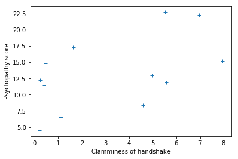
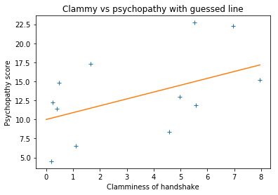
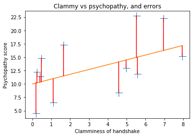
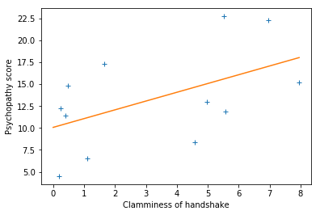
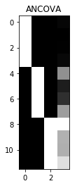

4.5 General linear model
$\newcommand{L}[1]{| #1 |}\newcommand{VL}[1]{\L{ \vec{#1} }}\newcommand{R}[1]{\operatorname{Re}\,(#1)}\newcommand{I}[1]{\operatorname{Im}\, (#1)}$
Introduction to the general linear model
These are some notes on simple regression, multiple regression, and the general linear model.
For more detail, see The general linear model and fMRI: Does love last forever?.
This page starts by setting up a simple regression. Then I will try to show how the simple regression gets expressed in a design matrix. Once we have that, it’s easy to extend simple regression to multiple regression. By adding some specially formed regressors, we can also express group membership, and therefore do analysis of variance. This last step is where multiple regression becomes the general linear model.
About this page
We go through regression and the general linear model slowly, showing how it works in symbols, and in code, with actual numbers.
The example regression problem
Let’s imagine that we have measured scores for a “psychopathy” personality trait in 12 students. We also have some other information about these students. For example, we measured how much sweat each student had on their palms, and we call this a “clammy” score. We first try and work out whether the “clammy” score predicts the “psychopathy” score. We’ll do this with simple linear regression.
Simple linear regression
We set our environment up to run the code and plots.
# Import numerical and plotting libraries
import numpy as np
import numpy.linalg as npl
import matplotlib.pyplot as plt
# Only show 6 decimals when printing
np.set_printoptions(precision=6)
%matplotlib inline
Here are our scores of “psychopathy” from the 12 students:
psychopathy = np.array(
[11.416, 4.514, 12.204, 14.835,
8.416, 6.563, 17.343, 13.02,
15.19 , 11.902, 22.721, 22.324])
These are the skin-conductance scores to get a measure of clamminess for the handshakes of each student:
clammy = np.array(
[0.389, 0.2 , 0.241, 0.463,
4.585, 1.097, 1.642, 4.972,
7.957, 5.585, 5.527, 6.964])
We happen to believe that there is some relationship between clammy
and psychopathy. Plotting them together we get:
plt.plot(clammy, psychopathy, '+')
plt.xlabel('Clamminess of handshake')
plt.ylabel('Psychopathy score');

It looks like there may be some sort of straight line relationship. We could try guessing at a line to fit the data. Let’s try an intercept of $10$ and slope $0.9$:
def my_line(x):
# My prediction for psychopathy given clamminess
return 10 + 0.9 * x
Plot the data with the prediction line.
# Plot the data
plt.plot(clammy, psychopathy, '+')
# Plot the prediction
x_vals = [0, max(clammy)]
y_vals = [my_line(0), my_line(max(clammy))]
plt.plot(x_vals, y_vals)
plt.xlabel('Clamminess of handshake')
plt.ylabel('Psychopathy score')
plt.title('Clammy vs psychopathy with guessed line');

What does the straight line relationship mean?
We are saying that the values of psychopathy can be partly predicted by a
straight line of formula 10 + clammy * 0.9.
$\newcommand{\yvec}{\vec{y}} \newcommand{\xvec}{\vec{x}} \newcommand{\evec}{\vec{\varepsilon}}$
To make this more general, let’s call our psychopathy data $\yvec$ - a vector
with 12 values, one for each student. $y_1$ is the value for the first student
(= 11.416) and $y_i$ is the value for student $i$ where $i \in 1 .. 12$.
Our clammy score is a predictor. Lets call the clammy scores $\xvec$ —
another vector with 12 values. $x_1$ is the value for the first student (=
0.389) and $x_i$ is the value for student $i$ where $i \in 1 .. 12$.
Our straight line model says:
where $c$ is the intercept and $b$ is the slope. For the guessed line above:
With the $\approx$ above, we are accepting that we will not succeed in explaining all the variation in our psychopathy data. We can rephrase this by saying that each observation is equal to the predicted value (from the formula above) plus some error for each observation:
How do we chose a good line?
The line gives a prediction of what psychopathy should be, for any value
of clammy. If we have some value x for clammy, then we can predict the
value y of psychopathy, with y = intercept + slope * x.
For example, here are the first values for clammy and psychopathy:
print(f'First clammy value {clammy[0]}')
print(f'First psychopathy value {psychopathy[0]}')
First clammy value 0.389
First psychopathy value 11.416
The second value is the actual value of psychopathy. The predicted
value of psychopathy, for this value of clammy is:
intercept = 10
slope = 0.9
predicted = intercept + slope * clammy[0]
predicted
10.3501
The error for our line, is the difference between the actual and predicted value.
actual = psychopathy[0]
error = actual - predicted
error
1.065900000000001
This is the error for the first value. We can get the errors for all the values in the same way.
This is the calculation of error for all 12 values. As usual, you don’t need to understand the code in detail:
all_predicted = intercept + clammy * slope
all_errors = psychopathy - all_predicted
all_errors
array([ 1.0659, -5.666 , 1.9871, 4.4183, -5.7105, -4.4243, 5.8652,
-1.4548, -1.9713, -3.1245, 7.7467, 6.0564])
Notice the first value for all_errors is the same as the value for error
we saw above.
The errors here are the distances between the prediction line and the points on the plot. Here I show the errors as red lines. Don’t worry about the code below, it’s not important to the idea.
# Plot data with the prediction and errors
plt.plot(clammy, psychopathy, '+', ms=15)
mx = max(clammy)
x_vals = [0, mx]
y_vals = [intercept, intercept + slope * mx]
plt.plot(x_vals, y_vals)
# Draw the error lines
for i in range(len(clammy)):
x_vals = [clammy[i], clammy[i]]
y_vals = [all_predicted[i], psychopathy[i]]
plt.plot(x_vals, y_vals, 'r')
plt.xlabel('Clamminess of handshake')
plt.ylabel('Psychopathy score')
plt.title('Clammy vs psychopathy, and errors');

A good line will make the errors as small as possible. Therefore, a good line will make the lengths of the red lines as short as possible.
We need to generate a single number, from the errors, that gives an overall measure of the size of the errors.
We cannot just add up the errors, because the negative and positive errors will cancel out. Even if the errors are a mixture of large positive and large negative, the sum could be very small.
The usual thing to do, is to square all the errors, to make sure they are all positive. Then we add all the squared errors. This gives the sum of squared error or SSE.
# A reminder of the errors we calculated above
all_errors
array([ 1.0659, -5.666 , 1.9871, 4.4183, -5.7105, -4.4243, 5.8652,
-1.4548, -1.9713, -3.1245, 7.7467, 6.0564])
# Square all the errors
squared_errors = all_errors ** 2
squared_errors
array([ 1.136143, 32.103556, 3.948566, 19.521375, 32.60981 , 19.57443 ,
34.400571, 2.116443, 3.886024, 9.7625 , 60.011361, 36.679981])
# Calculate the sum of the squared errors
SSE = sum(squared_errors)
SSE
255.75076072
The line is a good one when SSE is small. In fact, the usual “best fit” line chosen by packages such as Excel, is the line that gives the lowest SSE value, of all possible lines.
It is the line that minimizes the squared error, often called the least squares line.
How should we find this line?
Solving with optimization
Remember optimization, from registration?
We have an optimization problem here. Before we were trying to find the best
translations to minimize the difference between the first image and the second
image. Now we are trying to find the best slope and intercept to minimize the
Sum of Squared Error. As before, we can use the Scipy fmin for this:
from scipy.optimize import fmin
fmin minimizes a function, by adjusting the arguments to the function. In our case, our function should take a slope and intercept as parameters, and return the Sum of Squared Error:
# Function to minimize
def our_sse(params):
intercept, slope = params
# Use clammy (x values) and psychopathy (y values)
predicted = intercept + slope * clammy
errors = psychopathy - predicted
return np.sum(errors ** 2)
Let’s minimize:
# Minimize, starting at my original guess
intercept, slope = fmin(our_sse, [10, 0.9])
Optimization terminated successfully.
Current function value: 252.925606
Iterations: 31
Function evaluations: 62
Notice the “Current function value” - it is the SSE for the found slope and intercept, and it is lower than the SSE for my guessed line.
print(f'Found intercept {intercept:.6f}')
print(f'Found slope {slope:.6f}')
Found intercept 10.071261
Found slope 0.999267
Let us check the SSE value for this intercept and slope:
predicted = intercept + slope * clammy
errors = psychopathy - predicted
np.sum(errors ** 2)
252.92560645855875
Simple regression in matrix form
It turns out it will be useful to rephrase the simple regression model in matrix form. Let’s make the data and predictor and errors into vectors.
$\yvec$ is the vector of values $y_1 … y_{12}$.
$\xvec$ is the vector of values $x_1 … x_{12}$:
$\evec$ is the vector of errors $e_1 … e_{12}$:
Now we can rephrase our model as:
Bear with with us for a little trick. If $\mathbf{o}$ is a vector of ones, then we can rewrite the formula as:
because $o_i = 1$ and so $co_i = c$.
$\newcommand{Xmat}{\boldsymbol X} \newcommand{\bvec}{\vec{\beta}}$
We can now rephrase the calculation in terms of matrix multiplication.
Call $\Xmat$ the matrix of two columns, where the first column is the column of ones ($\mathbf{o}$ above) and the second column is $\xvec$. Call $\bvec$ the column vector:
This gives us the same formula as above, but in terms of matrix multiplication:
In symbols:
We still haven’t found our best fitting line. But before we go further, it might be obvious that we can easily add a new predictor here.
Multiple regression
Let’s say we think that psychopathy increases with age. We add the student’s age as another predictor:
age = [22.5, 25.3, 24.6, 21.4,
20.7, 23.3, 23.8, 21.7,
21.3, 25.2, 24.6, 21.8]
Now rename the clammy predictor vector from $\xvec$ to $\xvec_1$. Of course
$\xvec_1$ has 12 values $x_{1, 1}..x_{1, 12}$. Call the age predictor vector
$\xvec_2$. Call the slope for clammy $b_1$ (slope for $\xvec_1$). Call the
slope for age $b_2$ (slope for $\xvec_2$). Our model is:
In this model $\Xmat$ has three columns (ones, $\xvec_1$, and $\xvec_2$), and the $\bvec$ vector has three values $c, b_1, b_2$. This gives the same matrix formulation, with our new $\Xmat$ and $\bvec$: $\yvec = \Xmat \bvec + \evec$.
This is a linear model because our model says that the data $y_i$ comes from the sum of some components ($c, b_1 x_{1, i}, b_2 x_{2, i}, e_i$).
We can keep doing this by adding more and more regressors. In general, a linear model with $p$ predictors looks like this:
In the case of the models above, the first predictor $\xvec_1$ would be a column of ones, to express the intercept in the model.
Any model of the form above can still be phrased in the matrix form:
Population, sample, estimate
$\newcommand{\bhat}{\hat{\bvec}} \newcommand{\yhat}{\hat{\yvec}}$ Our students and their psychopathy scores are a sample from the population of all students’ psychopathy scores. The parameters $\bvec$ are the parameters that fit the design $\Xmat$ to the population scores. We only have a sample from this population, so we cannot get the true population $\bvec$ vector, we can only estimate $\bvec$ from our sample. We will write this sample estimate as $\bhat$ to distinguish it from the true population parameters $\bvec$.
Solving the model with matrix algebra
The reason to formulate our problem with matrices is so we can use some basic matrix algebra to estimate the “best” line.
Let’s assume that we want an estimate for the line parameters (intercept and slope) that gives the smallest “distance” between the estimated values (predicted from the line), and the actual values (the data).
We’ll define ‘distance’ as the squared difference of the predicted value from the actual value. These are the squared error terms $e_1^2, e_2^2 … e_{n}^2$, where $n$ is the number of observations - 12 in our case.
Revising: our model is:
Where $\yvec$ is the data vector $y_1, y_2, … y_n$, $\Xmat$ is the design matrix of shape $n, p$, $\bvec$ is the parameter vector, $b_1, b_2 … b_p$, and $\evec$ is the error vector giving errors for each observation $\epsilon_1, \epsilon_2 … \epsilon_n$.
Each column of $\Xmat$ is a regressor vector, so $\Xmat$ can be thought of as the column concatenation of $p$ vectors $\xvec_1, \xvec_2 … \xvec_p$, where $\xvec_1$ is the first regressor vector, and so on.
In our case, we want an estimate $\bhat$ for the vector $\bvec$ such that the errors $\evec = \yvec - \Xmat \bhat$ have the smallest sum of squares $\sum_{i=1}^n{e_i^2}$. $\sum_{i=1}^n{e_i^2}$ is called the residual sum of squares.
When we have our $\bhat$ estimate, then the prediction of the data from the estimate is given by $\Xmat \bhat$.
We call this the predicted or estimated data, and write it as $\yhat$. The errors are then given by $\yvec - \yhat$.
We might expect that, when we have found the right $\bhat$ then the errors will have nothing in them that can still be explained by the design matrix $\Xmat$. This is the same as saying that, when we have best prediction of the data ($\yhat = \Xmat \bhat$), the design matrix $\Xmat$ should be orthogonal to the remaining error ($\yvec - \yhat$). If the design is orthogonal to the errors, then $\Xmat^T \evec$ should be a vector of zeros.
If that is the case then we can multiply $\yvec = \Xmat \bhat + \evec$ through by $\Xmat^T$:
The last term now disappears because it is zero and:
If $\Xmat^T \Xmat$ is invertible (has a matrix inverse $(\Xmat^T \Xmat)^{-1}$) then there is a unique solution:
It turns out that, if $\Xmat^T \Xmat$ is not invertible, there are an infinite number of solutions, and we have to choose one solution, taking into account that the parameters $\bhat$ will depend on which solution we chose. The pseudoinverse operator gives us one particular solution. If $\bf{A}^+$ is the pseudoinverse of matrix $\bf{A}$ then the general solution for $\bhat$, even when $\Xmat^T \Xmat$ is not invertible, is:
Using this matrix algebra, what line do we estimate for psychopathy
and clammy?
X = np.column_stack((np.ones(12), clammy))
X
array([[1. , 0.389],
[1. , 0.2 ],
[1. , 0.241],
[1. , 0.463],
[1. , 4.585],
[1. , 1.097],
[1. , 1.642],
[1. , 4.972],
[1. , 7.957],
[1. , 5.585],
[1. , 5.527],
[1. , 6.964]])
# Use the pseudoinverse to get estimated B
B = npl.pinv(X).dot(psychopathy)
B
array([10.071286, 0.999257])
Here is the formala for the best-fit line we just calculated:
def my_best_line(x):
# Best prediction for psychopathy given clamminess
return B[0] + B[1] * x
# Plot the data
plt.plot(clammy, psychopathy, '+');
# Plot the new prediction
x_vals = [0, max(clammy)]
y_vals = [my_best_line(0), my_best_line(max(clammy))]
plt.plot(x_vals, y_vals)
plt.xlabel('Clamminess of handshake')
plt.ylabel('Psychopathy score');

This estimate for slope and intercept minimize the sum of squared error:
fitted = X.dot(B)
errors = psychopathy - fitted
print(np.sum(errors ** 2))
252.92560644993827
You already saw this slope and intercept from the fmin routine, above.
The advantage of this matrix method, is that it is much quicker. The matrix
method takes extra regressors in its stride, but fmin gets slow quickly, with
more regressors.
Contrasts
$\newcommand{cvec}{\mathbf{c}}$ We can combine the values in the $\bhat$ vector in different ways by using a contrast vector. A contrast vector $\cvec$ is a vector of weights $c_1, c_2 … c_p$ for each value in the $\bhat$ vector.
Assume that all vectors we have defined up until now are column vectors. Then a scalar value that is a linear combination of the $\bhat$ values can be written:
We now return to our original question, whether clamminess of handshake predicts psychopathy score.
If clamminess does predict psychopathy, then we would expect the slope
of the best fit line between clammy and psychopathy would be
different from zero.
In our model, we have two predictors, the column of ones and clammy.
$p = 2$ and $\bhat$ is length 2. We could choose just the second of
the values in $\bhat$ (therefore $b_1$ if $b_0$ is the first
value) with a contrast:
$\cvec^T \bhat$ with this contrast gives our estimate of the
slope relating clammy to psychopathy. Now we might be interested
if our estimate is further from zero than expected by chance.
To test whether the estimate is different from zero, we can divide the estimate by the variability of the estimate. This gives us an idea of how far the estimate is from zero, in terms of the variability of the estimate. We won’t go into the estimate of the variability here though, we’ll just assume it (the formula is in the code below). The estimate divided by the variability of the estimate gives us a t statistic.
With that introduction, here’s how to do the estimation and a t statistic given the data $\yvec$, the design $\Xmat$, and a contrast vector $\cvec$.
# Get t distribution code from scipy library
from scipy.stats import t as t_dist
def t_stat(y, X, c):
""" betas, t statistic and significance test given data, design matrix, contrast
This is OLS estimation; we assume the errors to have independent
and identical normal distributions around zero for each $i$ in
$\e_i$ (i.i.d).
"""
# Make sure y, X, c are all arrays
y = np.asarray(y)
X = np.asarray(X)
c = np.atleast_2d(c).T # As column vector
# Calculate the parameters - b hat
beta = npl.pinv(X).dot(y)
# The fitted values - y hat
fitted = X.dot(beta)
# Residual error
errors = y - fitted
# Residual sum of squares
RSS = (errors**2).sum(axis=0)
# Degrees of freedom is the number of observations n minus the number
# of independent regressors we have used. If all the regressor
# columns in X are independent then the (matrix rank of X) == p
# (where p the number of columns in X). If there is one column that
# can be expressed as a linear sum of the other columns then
# (matrix rank of X) will be p - 1 - and so on.
df = X.shape[0] - npl.matrix_rank(X)
# Mean residual sum of squares
MRSS = RSS / df
# calculate bottom half of t statistic
SE = np.sqrt(MRSS * c.T.dot(npl.pinv(X.T.dot(X)).dot(c)))
t = c.T.dot(beta) / SE
# Get p value for t value using cumulative density dunction
# (CDF) of t distribution
ltp = t_dist.cdf(t, df) # lower tail p
p = 1 - ltp # upper tail p
return beta, t, df, p
See p values from cumulative distribution functions for background on the probability values.
So, does clammy predict psychopathy? If it does not, then our
estimate of the slope will not be convincingly different from 0. The t
test divides our estimate of the slope by the error in the estimate;
large values mean that the slope is large compared to the error in the
estimate.
X = np.column_stack((np.ones(12), clammy))
Y = np.asarray(psychopathy)
B, t, df, p = t_stat(Y, X, [0, 1])
t, p
(array([[1.914389]]), array([[0.042295]]))
Dummy coding and the general linear model
So far we have been doing multiple regression. That is, all the
columns (except the column of ones) are continuous vectors of numbers
predicting our outcome data psychopathy. These type of predictors
are often called covariates.
It turns out we can use this same framework to express the fact that different observations come from different groups.
Expressing group membership in this way allows us to express analysis of variance designs using this same notation.
To do this, we use columns of dummy variables.
Let’s say we get some new and interesting information. The first 4 students come from Berkeley, the second set of 4 come from Stanford, and the last set of 4 come from MIT. Maybe the student’s college predicts if they are a psychopath?
How do we express this information? Let’s forget about the clamminess score for now and just use the school information. Our model might be that we can best predict the psychopathy scores by approximating the individual student psychopathy scores with a mean score for the relevant school:
We can code this with predictors in our design using indicator variables. The “Berkeley” indicator variable vector is 1 when the student is from Berkeley and zero otherwise. Similarly for the other two schools:
berkeley_indicator = [1, 1, 1, 1, 0, 0, 0, 0, 0, 0, 0, 0]
stanford_indicator = [0, 0, 0, 0, 1, 1, 1, 1, 0, 0, 0, 0]
mit_indicator = [0, 0, 0, 0, 0, 0, 0, 0, 1, 1, 1, 1]
X = np.column_stack((berkeley_indicator,
stanford_indicator,
mit_indicator))
X
array([[1, 0, 0],
[1, 0, 0],
[1, 0, 0],
[1, 0, 0],
[0, 1, 0],
[0, 1, 0],
[0, 1, 0],
[0, 1, 0],
[0, 0, 1],
[0, 0, 1],
[0, 0, 1],
[0, 0, 1]])
These indicator columns are dummy variables where the values code for the group membership.
Now the $\bvec$ vector will be:
When we estimate these using the least squares method, what estimates will we get for $\bhat$?
B = npl.pinv(X).dot(psychopathy)
B
array([10.74225, 11.3355 , 18.03425])
np.mean(psychopathy[:4])
np.mean(psychopathy[4:8])
np.mean(psychopathy[8:])
18.03425
It looks like the MIT students are a bit more psychopathic. Are they more psychopathic than Berkeley and Stanford?
We can use a contrast to test whether the mean for the MIT students is greater than the mean of (mean for Berkeley, mean for Stanford):
B, t, df, p = t_stat(psychopathy, X, [-0.5, -0.5, 1])
t, p
(array([[2.340356]]), array([[0.021997]]))
Ah — yes — just as we suspected.
The model above expresses the effect of group membership. It is the expression of a one-way analysis of variance (ANOVA) model using $\yvec = \Xmat \bvec + \evec$.
ANCOVA in the General Linear Model
Our formulation $\yvec = \Xmat \bvec + \evec$ makes it very easy to add extra regressors to models with group membership. For example, we can easily make a simple ANCOVA model (analysis of covariance).
ANCOVA is a specific term for the case where we have a model with both group membership (ANOVA model) and one or more continuous covariates.
For example, we can add back our clamminess score to the mix. Does it explain anything once we know which school the student is at?
X = np.column_stack((berkeley_indicator,
stanford_indicator,
mit_indicator,
clammy))
X
array([[1. , 0. , 0. , 0.389],
[1. , 0. , 0. , 0.2 ],
[1. , 0. , 0. , 0.241],
[1. , 0. , 0. , 0.463],
[0. , 1. , 0. , 4.585],
[0. , 1. , 0. , 1.097],
[0. , 1. , 0. , 1.642],
[0. , 1. , 0. , 4.972],
[0. , 0. , 1. , 7.957],
[0. , 0. , 1. , 5.585],
[0. , 0. , 1. , 5.527],
[0. , 0. , 1. , 6.964]])
We test the independent effect of the clamminess score with a contrast on the clammy slope parameter:
B, t, df, p = t_stat(psychopathy, X, [0, 0, 0, 1])
t, p
(array([[-0.010661]]), array([[0.504122]]))
It looks like there’s not much independent effect of clamminess. The MIT students seem to have clammy hands, and once we know that the student is from MIT, the clammy score is not as useful.
Displaying the design matrix as an image
We can show the design as an image, by scaling the values with columns.
We scale within columns because we care more about seeing variation within the regressor than between regressors. For example, if we have a regressor varying between 0 and 1, and another between 0 and 1000, without scaling, the column with the larger numbers will swamp the variation in the column with the smaller numbers.
def scale_design_mtx(X):
"""utility to scale the design matrix for display
This scales the columns to their own range so we can see the variations
across the column for all the columns, regardless of the scaling of the
column.
"""
mi, ma = X.min(axis=0), X.max(axis=0)
# Vector that is True for columns where values are not
# all almost equal to each other
col_neq = (ma - mi) > 1.e-8
Xs = np.ones_like(X)
# Leave columns with same value throughout with 1s
# Scale other columns to min, max in column
mi = mi[col_neq]
ma = ma[col_neq]
Xs[:,col_neq] = (X[:,col_neq] - mi)/(ma - mi)
return Xs
Then we can display this scaled design with a title and some default image display parameters:
def show_design(X, design_title):
""" Show the design matrix nicely """
plt.imshow(scale_design_mtx(X),
interpolation='nearest',
cmap='gray') # Gray colormap
plt.title(design_title)
We can then see our ANCOVA design above at a glance:
show_design(X, 'ANCOVA')
